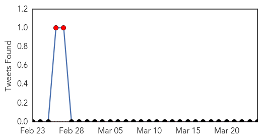

30 Day Trends
Web: 0 alerts, 3 warnings
Twitter: 0 alerts, 0 warnings
Top Articles:
- 0.999
- Parents in Sama Sarhan not sending children to school over H1N1 fears
- 0.996
- Medical teams at Khulna border on alert
- 0.995
- 16 Persons test positive for swine flu in West Bengal
- 0.965
- Ramdhani takes swine flu swipe at Gujarat
- 0.958
- 16 new cases of swine flu in Bengal, no fresh deaths
- 0.947
- 16 new cases of swine flu in Bengal, no fresh deaths
- 0.608
- India-born South African latest H1N1 victim in city
Top Tweets:
-
No tweets found for Mar 24, 2015
Web/News Articles

Tweets
Article Locations